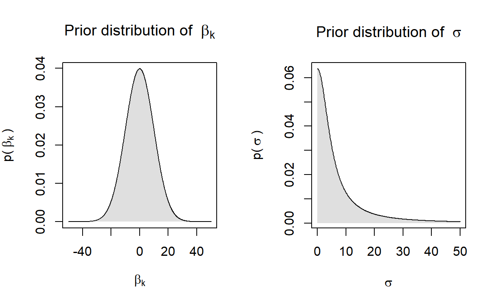
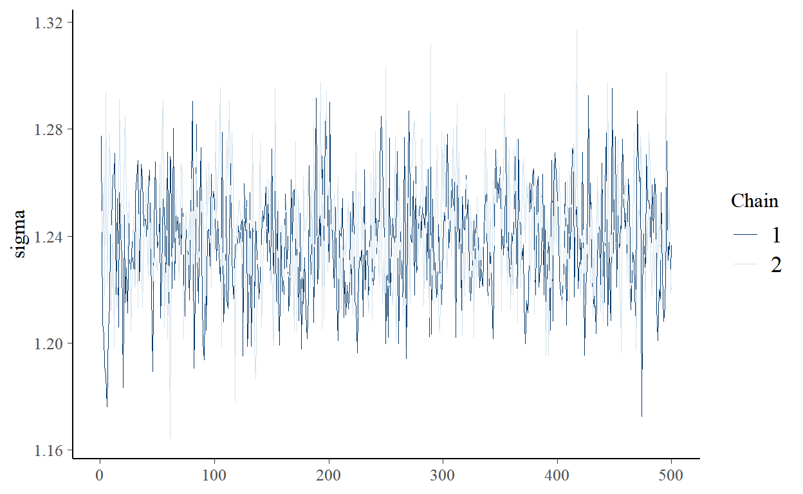

Stan
What is Stan?
In the words of the developers:
"Stan is a state-of-the-art platform for statistical modeling and high-performance statistical computation. Thousands of users rely on Stan for statistical modeling, data analysis, and prediction in the social, biological, and physical sciences, engineering, and business.
Users specify log density functions in Stan’s probabilistic programming language and get:
- full Bayesian statistical inference with MCMC sampling (NUTS, HMC)
- approximate Bayesian inference with variational inference (ADVI)
- penalized maximum likelihood estimation with optimization (L-BFGS)
Source: https://mc-stan.org/
Why Stan?
- Open-source software
- Fast and stable algorithms
- High flexibility with few limitations
- Extensive documentation
- Highly transparent development process; see Stan Development Repository on Github
- Very responsive Development Team
- Large and active community in the Stan Forums and Stack OVerflow
- Increasing number of case studies, tutorials, papers and textbooks
- Compatibility with various editor for syntax highlighting, formatting, and checking (incl. RStudio and Emacs)
Stan interfaces
- RStan (R)
- PyStan (Python)
- CmdStan (shell, command-line terminal)
- MatlabStan (MATLAB)
- Stan.jl (Julia)
- StataStan (Stata)
- MathematicaStan (Mathematica)
- ScalaStan (Scala)
(Some) R packages
- rstan: General R Interface to Stan
- shinystan: Interactive Visual and Numerical Diagnostics and Posterior Analysis for Bayesian Models
- bayesplot: Plotting functions for posterior analysis, model checking, and MCMC diagnostics.
- brms: Bayesian Regression Models using ‘Stan’, covering a growing number of model types
- rstanarm: Bayesian Applied Regression Modeling via Stan, with an emphasis on hierarchical/multilevel models
- edstan: Stan Models for Item Response Theory
- rstantools: Tools for Developing R Packages Interfacing with ‘Stan’
Caveat: Reproducibility
Under what conditions are estimates reproducible? See Stan Reference Manual, Section 19:
- Stan version
- Stan interface (RStan, PyStan, CmdStan) and version, plus version of interface language (R, Python, shell)
- versions of included libraries (Boost and Eigen)
- operating system version
- computer hardware including CPU, motherboard and memory
- C++ compiler, including version, compiler flags, and linked libraries
- same configuration of call to Stan, including random seed, chain ID, initialization and data
Bayesian workflow
A quick overview
The short version
- Specification: Specify the full probability model
- data
- likelihood
- priors
- Model Building: Translate the model into code
- Validation: Validate the model with fake data
- Fitting: Fit the model to actual data
- Diagnosis: Check generic and algorithm-specific diagnostics to assess convergence
- Posterior Predictive Checks
- Model Comparison

Specification (linear model)
Reminder: Equivalent notations
- Scalar form: \[y_i = \beta_1 x_{i1} + \beta_2 x_{i2} + \beta_3 x_{i3} + \epsilon_i \text{ for all } i=1,...,N\]
- Row-vector form: \[y_i = \mathbf{x_i^{\prime}} \mathbf{\beta} + \epsilon_i \text{ for all } i=1,...,N\]
- Column-vector form: \[\mathbf{y} = \beta_1 \mathbf{x_{1}} + \beta_2 \mathbf{x_{2}} + \beta_3 \mathbf{x_{3}} \mathbf{\epsilon}\]
- Matrix form: \[\mathbf{y = X \beta + \epsilon}\]
Example: Linear model
Our knowledge of generalized linear models gives us *almost everything we need!
Probability model for the data
First, let’s recap the three parts of every GLM in the context of the linear model:
- Family: \(\mathbf{y} \sim \text{Normal}(\mu, \sigma)\)
- (Inverse) link function: \(\mathbf{y^{\ast}} = \text{id}(\mu) = \mu\)
- Linear component: \(\mu = \mathbf{X} \beta\)
The family specifies the probability model (a.k.a. likelihood, data-generating process, or generative model) for the data: The fundamental assumption of the linear model is that every observation \(y_i\) is a realization from a normal pdf with location parameter (mean) \(\mu_i\) and constant scale parameter (variance) \(\sigma^2\).
Note: Mimicking the convention in both R and Stan, we parameterize the normal distribution in terms of its mean and standard deviation (not variance)!
Known and unknown quantities
- Parameters (unknown, random quantities):
- \(\beta\), the coefficient vector
- \(\sigma\), the scale parameter of the normal
- \(\mu\), the location parameter of the normal
- Data (known, fixed quantities):
- \(\mathbf{y}\), the outcome vector
- \(\mathbf{X}\), the design matrix
- the dimensions of \(\mathbf{y}_{N \times 1}\) and \(\mathbf{X}_{N \times K}\)
- the dimensions of \(\beta_{K \times 1}\), \(\sigma\) (a scalar), and \(\mu_{N \times 1}\)
Priors
What is still missing are prior distributions for the unknown quantities.
Here, we have quite some discretion. There are few rules we must adhere to:
- Our \(\beta\)’s have unconstrained support (though by far not all value ranges may be reasonable!)
- The scale parameter \(sigma\) cannot be negative
Here, we will opt for a convenience solution and specify weakly informative zero-mean normal priors for the \(\beta\)’s and a weakly informative half-Cauchy prior for \(\sigma\):
- \(\beta \sim \text{N}(0, 10)\)
- \(\sigma \sim \text{Cauchy}^{+}(0, 5)\)

Model building
Stan Program Blocks
- Functions: Declare user written functions
- Data: Declare all known quantities
- Transformed Data: Transform declared data inputs (once)
- Parameters: Declare all unknown quantities
- Transformed Parameters: Transform declared parameters (each step, each iteration)
- Model: Transform parameters, specify prior distributions and likelihoods
- Generated Quantities (each iteration)

Script for a Stan program
Writing scripts for Stan programs
- Start with a blank script in your preferred code editor and save it as “lm.stan” .
- This will enable syntax highlighting, formatting, and checking in RStudio and Emacs.
- Alternatively, you can save your model as a single character string in R (with some drawbacks).
Style guide
- There is a style guide. Some recommendations:
- consistency
- lines should not exceed 80 characters
- lowercase variables, words separated by underscores
- like R: space around operators:
y ~ normal(...),x = (1 + 2) * 3 - spaces after commas are optional:
y[m,n] ~ normal(0,1)ory[m, n] ~ normal(0, 1)
- Always make sure to end your script with a blank line.
- You must use a delimiter to finish lines:
;. // this is a comment
Data block
Declare all known quantities, including data types, dimensions, and constraints:
- \(\mathbf{y}_{N \times 1}\)
- \(\mathbf{X}_{N \times K}\)
data {
int<lower=1> N; // num. observations
... declarations ...
}data {
int<lower=1> N; // num. observations
int<lower=1> K; // num. predictors
matrix[N, K] x; // model matrix
vector[N] y; // outcome vector
}Parameters block
Declare unknown ‘base’ quantities, including storage types, dimensions, and constraints:
- \(\beta\), the coefficient vector
- \(\sigma\), the scale parameter of the normal
parameters {
... declarations ...
}parameters {
vector[K] beta; // coef vector
real<lower=0> sigma; // scale parameter
}Transformed parameters block
Declare and specify unknown transformed quantities, including storage types, dimensions, and constraints:
- \(\mu = \mathbf{X} \beta\), the linear prediction
transformed parameters {
... declarations ... statements ....
}transformed parameters {
vector[N] mu; // declare
mu = x * beta; // assign
}Model block
Declare and specify local variables (optional) and specify sampling statements:
- \(\beta_k \sim \text{Normal}(0, 10) \text{ for k = 1,...,K}\)
- \(\sigma \sim \text{Cauchy}^{+}(0, 5)\)
- \(\mathbf{y} \sim \text{Normal}(\mu, \sigma)\)
model {
// priors
... statements ...
// log-likelihood
... statements ...
}model {
// priors
target += normal_lpdf(beta | 0, 10); // priors for beta
target += cauchy_lpdf(sigma | 0, 5); // prior for sigma
// log-likelihood
target += normal_lpdf(y | mu, sigma); // likelihood
}Writing Stan programs in R
- You can supply Stan programs as a character string in R
- Downsides:
- No syntax highlighting, formatting, and checking
- Must use double quotation marks
"around the strong to avoid that the transposition operator'breaks the string
- Upsides: Works with the interactive
learnrtutorials in our workshop!
# Save as character
lm_code <-
"data {
int<lower=1> N; // num. observations
int<lower=1> K; // num. predictors
matrix[N, K] x; // design matrix
vector[N] y; // outcome vector
}
parameters {
vector[K] beta; // coef vector
real<lower=0> sigma; // scale parameter
}
transformed parameters {
vector[N] mu; // declare lin. pred.
mu = x * beta; // assign lin. pred.
}
model {
// priors
target += normal_lpdf(beta | 0, 10); // priors for beta
target += cauchy_lpdf(sigma | 0, 5); // prior for sigma
// log-likelihood
target += normal_lpdf(y | mu, sigma); // likelihood
}"
# Write to script
writeLines(lm_code, con = "lm.stan")Validation
Simulate the data-generating process in R
# Set seed
set.seed(20210329)
# Simulate data
N <- 1000L # num. observations
K <- 5L # num. predictors
x <- cbind( # design matrix
rep(1, N),
matrix(rnorm(N * (K - 1)), N, (K - 1))
)
# Simulate parameters
beta <- rnorm(K, 0, 1) # coef. vector
sigma <- 2.5 # scale parameter
# Get transformed parameters
mu <- x %*% beta # linear prediction
# Simulate outcome variable
y_sim <- rnorm(N, mu, sigma) # simulated outcomeSetup and compilation
## Setup
library(rstan)
rstan_options(auto_write = TRUE) # avoid recompilation of models
options(mc.cores = parallel::detectCores()) # parallelize across all CPUs
## Data as list
standat_val <- list(
N = N,
K = K,
x = x,
y = y_sim
)
## C++ Compilation
lm_mod <- rstan::stan_model(model_code = lm_code)Estimation
lm_val <- rstan::sampling(
lm_mod, # compiled model
data = standat_val, # data input
algorithm = "NUTS", # algorithm
control = list( # control arguments
adapt_delta = .85),
save_warmup = FALSE, # discard warmup sims
sample_file = NULL, # no sample file
diagnostic_file = NULL, # no diagnostic file
pars = c("beta", "sigma"), # select parameters
iter = 2000L, # iter per chain
warmup = 1000L, # warmup period
thin = 2L, # thinning factor
chains = 2L, # num. chains
cores = 2L, # num. cores
seed = 20210329) # seedOutput summary
Reminder: Here are the ‘true’ parameter values:
true_pars <- c(beta, sigma)
names(true_pars) <- c(paste0("beta[", 1:5, "]"), "sigma")
true_parsAnd here are the estimates from our model:
lm_val- When comparing these estimates, the question is, of course, how much deviation should have us worried.
- Deviations from a single validation run may be due to a circumstantial selection of extreme ‘true’ parameter values when simulating the data generating process.
- Cook, Gelman, and Rubin (2006) thus recommend running many replications of such validation simulations.
- They also provide a useful test statistic.
A stanfit object
str(lm_val)Inference
For the sake of illustration, we use the replication data from Bischof and Wagner (2019), made available through the American Journal of Political Science Dataverse.
The original analysis uses Ordinary Least Squares estimation to gauge the effect of the assassination of the populist radical right politician Pim Fortuyn prior to the Dutch Parliamentary Election in 2002 on micro-level ideological polarization.
The outcome variable contains squared distances of respondents’ left-right self-placement to the pre-election median self-placement of all respondents. The main predictor is a binary indicator whether the interview was conducted before or after Fortuyn’s assassination.
Getting actual data
## Retrieve and manage data
bw_ajps19 <-
read.table(
paste0(
"https://dataverse.harvard.edu/api/access/datafile/",
":persistentId?persistentId=doi:10.7910/DVN/DZ1NFG/LFX4A9"
),
header = TRUE,
stringsAsFactors = FALSE,
sep = "\t",
fill = TRUE
) %>%
select(wave, fortuyn, polarization) %>% ### select relevant variables
subset(wave == 1) %>% ### subset to pre-election wave
na.omit() ### drop incomplete rows
## Define data
x <- model.matrix(~ fortuyn, data = bw_ajps19)
y <- bw_ajps19$polarization
N <- nrow(x)
K <- ncol(x)
## Collect as list
standat_inf <- list(
N = N,
K = K,
x = x,
y = y)Inference
lm_inf <- rstan::sampling(
lm_mod, # compiled model
data = standat_inf, # data input
algorithm = "NUTS", # algorithm
control = list( # control arguments
adapt_delta = .85),
save_warmup = FALSE, # discard warmup sims
sample_file = NULL, # no sample file
diagnostic_file = NULL, # no diagnostic file
pars = c("beta", "sigma"), # select parameters
iter = 2000L, # iter per chain
warmup = 1000L, # warmup period
thin = 2L, # thinning factor
chains = 2L, # num. chains
cores = 2L, # num. cores
seed = 20210329) # seedPosterior summaries
The original analysis reports point estimates (standard errors) of 1.644 (0.036) for the intercept and -0.112 (0.076) for the before-/after indicator.
How do our estimates compare?
Model summary
print(lm_inf,
pars = c("beta", "sigma"),
digits_summary = 3L)Hypothesis testing
# Extract posterior samples for beta[2]
beta2_posterior <- rstan::extract(lm_inf)$beta[, 2]
# Probability that beta[2] is greater than zero
mean(beta2_posterior > 0)## [1] 0.063Convergence diagnostics
Generic diagnostics: Rhat and n_eff
- \(\hat{R} < 1.1\): Potential scale reduction statistic (aka Gelman-Rubin convergence diagnostic)
- low values indicate that chains are stationary (convergence to target distribution within chains)
- low values indicate that chains mix (convergence to same target distribution across chains)
- \(\frac{\mathtt{n_{eff}}}{\mathtt{n_{iter}}} > 0.001\): Effective sample size
- A small effective sample size indicates high autocorrelation within chains
- This indicates that chains explore the posterior density very slowly and inefficiently
Algorithm-specific diagnostics
In the words of the developers:
“Hamiltonian Monte Carlo provides not only state-of-the-art sampling speed, it also provides state-of-the-art diagnostics. Unlike other algorithms, when Hamiltonian Monte Carlo fails it fails sufficiently spectacularly that we can easily identify the problems.”
- Divergent transitions after warmup (validity concern)
- increase
adapt_delta(target acceptance rate) - reparameterize/optimize your code (see )
- increase
- Maximum treedepth exceeded (efficiency concern)
- increase
max_treedepth
- increase
- Diagnostics summary for
stanfitobject:check_hmc_diagnostics(object) - For further information, see the Guide to Stan’s warnings
Visual diagnostics using shinystan
library(shinystan)
launch_shinystan(lm_inf)Additional Functionality:
generate_quantity(): Add a new parameter as a function of one or two existing parametersdeploy_shinystan(): Deploy a ‘ShinyStan’ app on shinyapps.io
Visual diagnostics using bayesplot
bayesplot offers a vast selection of visual diagnostics for stanfit objects:
- Diagnostics for No-U-Turn-Sampler (NUTS)
- Divergent transitions
- Energy
- Bayesian fraction of missing information
- Generic MCMC diagnostics
- \(\hat{R}\)
- \(\mathtt{n_{eff}}\)
- Autocorrelation
- Mixing (trace plots)
For full functionality, examples, and vignettes:
- GitHub Examples
- CRAN Vignettes
available_mcmc()function
Example: Trace plot for sigma

Computational problems
Suppose one or several of the following apply:
- Your algorithm-specific diagnostics throw warnings (that don’t go away easily)
- Your convergence diagnostics indicate signs of non-convergence (and increasing the warm-up period doesn’t help)
- Everything converges, but you get non-sensical estimates and predictions
- You are confident that your model will eventually converge to a well-behaved target distribution but it takes forever and even lengthy runs won’t get you there (yet).
Then what?
Addressing computational problems
Gelman et al. (2020) have some answers:
Check for model misspecification
- Is the probability model correctly specified?
- Are constraints set adequately?
- Do your priors allow for posterior density in regions where you’d expect it?
- Are your parameters statistically identified?
When a complex model fails: Reduce complexity
- Suppose you fit a mixture model with two equations, a constrained probabilistic mixing parameter, and various random effects in each equation
- Fit each equation separately without the random effects
- Fit the mixture model without the random effects
- Fit each equation with random effects
Be time-efficient
- Test the model on small sets of well-behaved simulated data
- Test the model using short runs
Efficiency tuning
- Vectorize: Use matrix multiplication instead of loops through matrix rows.
- Reparameterize. There are some common suggestions (more in the next session).
- Standardize data inputs. Increases the chances that your parameters will be on similar scales (which may speed up computation).
- Alternatively: Use weakly informative data-dependent priors.
- Make priors more informative (if defensible): Can prevent chains from wandering far off the target distribution.
- Parallelize: Markov chains are independent. Let them run at the same time (if your CPUs allow for it)!